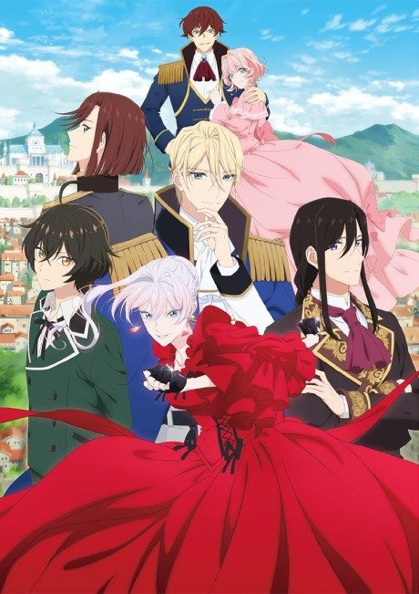

Anime
Light novel
2025 · Action, Comedy, Drama
May I Ask for One Final Thing?
最後にひとつだけお願いしてもよろしいでしょうか
AniList7.3
Animeter—
Episodes13 ep
SourceVol. 3
Anime finished. Where does the story go next?
Start at Volume3
The anime ends at the end of light novel volume 2, so start at volume 3.
12ongoing
Season 1Start reading here
More like May I Ask for One Final Thing?